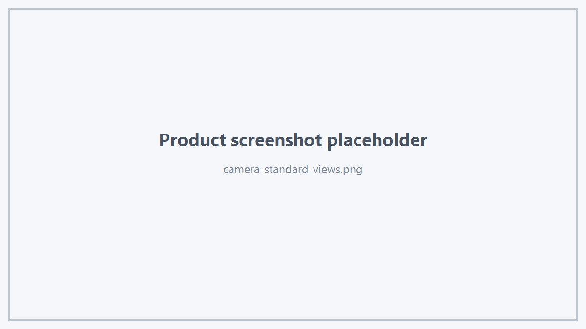

Hts Viewer SDK 提供常用工程视图控制接口。
1. Fit View
用于让当前模型适配视图。
2. Fit Selection
3. 标准视图
viewer.setTopView();
viewer.setBottomView();
viewer.setFrontView();
viewer.setRearView();
viewer.setRightView();
viewer.setLeftView();
viewer.setIsoView();

Standard Views
4. Selection Center
viewer.setViewCenterToSelection();
5. Zoom Around Model Center
viewer.zoomAroundModelCenter(1.2);
factor 的具体交互体验应以当前 SDK 版本 Demo 为准。
6. Fly To Targets
viewer.flyToTargets(targets);
适合业务树、搜索结果、错误定位、Boundary/Excitation 导航等场景。
7. 推荐交互
对于业务树选中对象后定位，典型流程：
viewer.setSelectionTargets(targets);
viewer.flyToTargets(targets);
或者：
根据产品交互选择其中一种。
 1.18.0
1.18.0